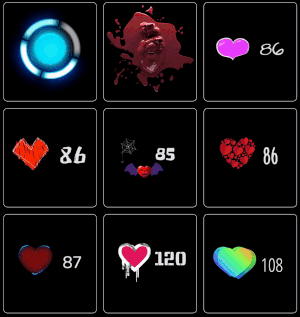
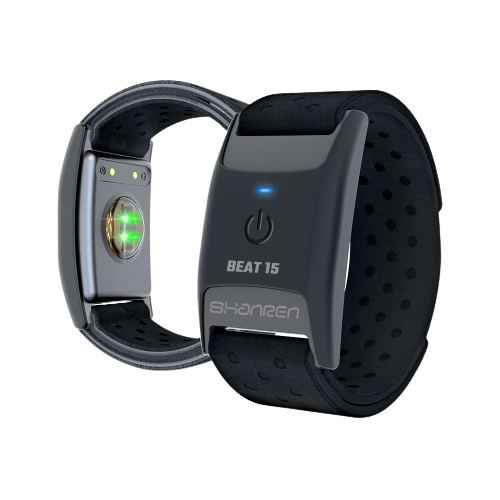

别再纠结 HypeRate 值不值得买——我把三类主播的账都算清楚了
HypeRate 把实时心率接入直播生态，从弹幕自动触发到智能家居联动都做。但免费版够不够用？付费版到底多了什么？三种使用强度逐一算账。
定价拆解：免费版给的 vs 付费版多的
先摆账。HypeRate 的官网上功能列表划得很清楚，素材里没直接给价格，但功能边界非常清晰——我把免费版能做的事和付费版解锁的事列出来，你自己对照。
免费版能做的核心事：
- 连接一个蓝牙心率设备（胸带、臂带、智能手表都行，200+ 型号兼容）
- 桌面端实时 BPM 覆盖层（位置、字体、颜色、脉冲动画全部可自定义）
- 基础心率分区（正常/较高/危险三级颜色切换）
- 最基础的 Firebot / Streamer.bot 集成——能设阈值触发，但数量有限
付费版解锁的核心事：
- 同时连接多个心率源（比如主播自己 + 嘉宾）
- 心率趋势分析和 Zone 5 持续时间这类高级触发器
- Lumia Stream / Home Assistant 全链路联动——把心率数据推到智能家居
- 心率驱动的高光自动剪辑（hypeclips）
- 直播间专属的高级统计面板
有一个细节值得注意：覆盖层外观自定义是免费就能用的——字体、位置、颜色、脉冲动画全都不锁付费。这意味着如果你只是想在 OBS 画面角落放一个好看的 BPM 数字，免费版足够。

算账：三类主播各花多少精力换什么效果
轻度用户：我偶尔播一次，免费版够用
假设你每周播 1-2 次，每次 2-3 小时。你的需求大概就是：让观众知道你现在紧张不紧张。
免费版能满足的：
- 一个覆盖层小部件放在 FPS 画面右上角，脉冲动画跟着心跳跳——观众一眼能看到
- 心率超过 160 时自动发一条弹幕（Firebot 免费版也能设一个阈值）
- Polar H10 或者你手上的 Apple Watch Series 4+ 直接连，零额外硬件成本
时间账：花 15 分钟从下载拿安装包装好、配一下覆盖层位置和 Firebot 触发器，之后每次直播自动跑。省下来的是"观众好奇主播紧张不紧张但没地方看"的尴尬。
结论：完全不用付费。省下来的钱可以买杯好咖啡。
主力用户：我天天播，需要自动化省时间
假设你每周播 5-6 次，每次 4-6 小时，弹幕机器人全开，可能还有 Lumia Stream 灯光联动。
免费版的短板开始暴露：
- 只能连一个心率源——如果你有嘉宾连麦，嘉宾的心率数据接不进来
- Firebot 里心率触发器数量有限——你想设"连续 Zone 5 30 秒 + 播放警报音效 + 切 OBS 紧张场景"这种多条件组合，免费版触发不了
- 心率趋势（每秒上升 > 5 BPM 这种）需要付费版才解锁
付费版给你的效率提升：
- 多心率源 = 嘉宾心率也能进直播画面（观众喜欢看多人紧张对比）
- 高级触发器 = 一个条件自动串起 OBS 切场景 + 灯光变色 + 音效 + 截图保存，全程 1-2 秒完成
- 省下来的是：手动监控心率 → 手动切场景 → 手动调灯光的时间。每次直播省 20-30 分钟操作，一个月下来省 10-15 小时。

时间账：按年订阅算（假设一个月几十块），月成本约一顿午饭钱。换每月 10+ 小时的操作节省，以及更沉浸的直播效果带来的留存提升。
结论：主力主播值得付。但别急——先用免费版跑两周，确认你真的在用那些自动化功能再升级。很多人订阅了之后发现自己还是手动切场景的，白白浪费钱。
重度用户：我做 IRL 直播，要全屋联动
假设你是户外 IRL 主播或者高端游戏主播，已经有 Home Assistant 全屋智能系统、Lumia Stream 专业灯光、Touch Portal 手机控制台全套。
付费版几乎是必选项——不是它贵不贵的问题，是免费版根本接不进你的生态：
- Home Assistant 需要 HypeRate MQTT 桥接，这个桥接脚本是付费版才给的 API，具体接法在hyperate文档里有完整教程
- Lumia Stream 的心率驱动规则（Zone 5 持续 5 秒 → 灯光红闪 5 秒 → 超时自动降强度）需要付费版解锁趋势数据
- 多设备同时接入（主播自己 + 队友 + 嘉宾）只能付费版支持
有一个容易忽略的成本：硬件。如果你没有心率设备，入门 CooSpo H808S 胸带 ¥200-300，Polar H10 ¥500-700。已有 Apple Watch / Garmin / Amazfit 直接白嫖硬件成本。
时间账：Home Assistant + HypeRate 的自动化链搭好之后，紧张时刻 → 灯光全红 → 发弹幕 → 切场景 → 震动反馈 全部自动串起来。你只管专心玩游戏，环境跟着你的情绪同步。
结论：重度用户闭眼付。这不是工具，是你直播体验的一部分。
替代方案：不花钱能到什么程度
方案一：完全免费路线
- 用 HypeRate 免费版 + 你已有的智能手表当心率源
- 覆盖层自定义拉满，脉冲动画调得够好看
- Firebot 免费版设一个基础阈值触发器（虽然数量有限但够核心用）
- 跳过 Lumia Stream 和 Home Assistant 联动
代价：自动化程度减半，需要手动补一些操作。但核心的"心率显示"和"一个自动触发"能用。
方案二：换纯 OBS 插件
OBS 有一些社区心率插件可以直接接 BLE 设备，完全免费。
代价：没有 Firebot / Streamer.bot 集成，没有 Lumia Stream 灯光联动。只能在 OBS 画面里放一个数字，触发器和生态链路全没了。
方案三：降低使用频率
只在高强度游戏直播时开 HypeRate，日常闲聊/教程直播关掉。免费版足够覆盖高强度场景的核心功能。
结论：三秒对号入座
| 你的情况 | 付费建议 |
|---|---|
| 每周播 1-2 次，偶尔用用 | 永远免费版 |
| 天天播，弹幕机器人全开，但还没灯光联动 | 先用免费版跑两周，确认你真的在用自动化再升级 |
| Home Assistant / Lumia Stream / 多主播联动全都要 | 闭眼付 |
最后提一句——如果你已经有 Apple Watch Series 4+ 或者 Garmin / Amazfit，连额外硬件都不用买，直接零成本启动。先跑起来看效果，觉得确实提升了观众体验再考虑付费的事。这篇文涉及的所有资料和配置示例，我分别同步到了GitHub、Gitee 和 GitCode，怕海外仓库访问慢的直接走国内镜像就行。